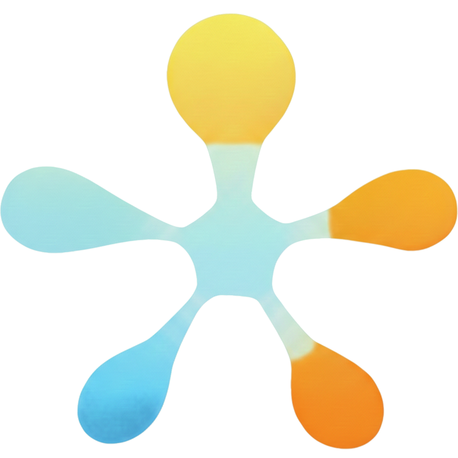

Discover the story, core values, and community-driven mission behind
mon
Projet Tri
Contributing to the development of triathlon in Quebec by making it more accessible, both financially and athletically.
mon Projet Tri supports triathletes, especially those who are just starting out, and creates a positive synergy among everyone involved in triathlon: athletes, coaches and clubs, events, equipment brands and health professionals. Our goal is not to make money, but to help triathlon grow.
The people who represent mon Projet Tri volunteer their time. Only the coaches are paid, and the fees paid for coaching go to them. The non-profit's operations are made possible through sponsorship, and we are actively seeking funding. Support the mission ›
Transforming field experience and passion into a professional support structure.
mon Projet Tri was born out of a desire to share and a simple observation made on the field by its founder, Frederic Hadi. A triathlete since his teenage years in the 90s, Frederic reconnected with his passion in 2017 with the goal of completing an Ironman. Since then, his commitment has grown continuously, both as a volunteer for major events and as an Official for Triathlon Québec since 2024.
Through his exchanges with the community, Frédéric often encountered athletes feeling lost faced with the complexity of the sport: novices unsure of where to start, experienced athletes desperately seeking a qualified coach, or solo athletes lacking technical resources despite their desire for performance.
Frédéric realized that the advice and solutions he spontaneously shared deserved to be officialized so the wider community could benefit. The NPO concept was born: combining the expertise of seasoned triathletes and professionals to offer structured guidance to those wanting to progress without wasting time on trial and error.
The goal: enabling passionate individuals to reach their goals backed by a structure that values human connection, technical precision, and accessibility.
An interconnected framework where every key player collaborates to energize and grow the sport across Quebec.
Quebec triathlon revolves first and foremost around its athletes. Whether they come from other sports and are eager to try something new, or are already passionate about multisport, we put athletes at the heart of everything we do by addressing their unique realities:
Surrounding the athlete is a complete network of professionals and organizations. mon Projet Tri acts as the hub connecting these essential components to propel the sport forward:
Guardians of technical expertise and drivers of local development, guiding athletic progression.
Ralliances and races that turn goals into reality and celebrate personal achievement.
Dedicated to injury prevention, clinical care, recovery, and overall well-being.
Specialized shops and manufacturers providing adapted, cutting-edge gear.
